Elden Ring FromSoftware tarafından geliştirilmiş olan ve Bandai Namco Entertainment tarafından yayınlanmış olan yeni bir aksiyon-rol yapma oyunudur. Oyun, oyun yönetmeni Hidetaka Miyazaki ve fantezi yazarı George R. R. Martin'in ortak çalıştıkları bir projedir ve Microsoft Windows, PlayStation 4-5, Xbox One ve Steam Deck platformlarında 24 Şubat 2022 tarihinde çıkış yapmıştır.
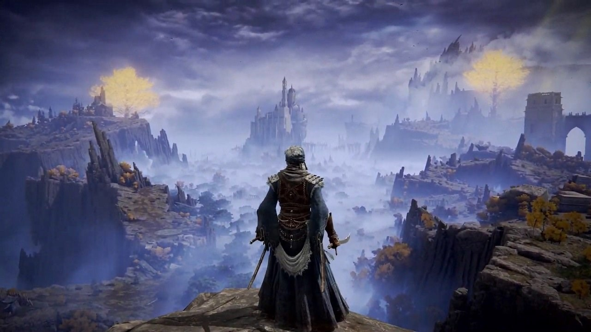
Elden Ring, E3 2019 fuarında duyurulan ve geliştirmesi hala devam etmekte olan bir aksiyon-rol yapma oyunudur. Oyun, FromSoftware tarafından geliştirilmektedir ve yayımcılığını Bandai Namco Entertainment üstlenmektedir; Microsoft Windows, PlayStation 4 ve Xbox One platformlarında çıkış yapacaktır. Oyunun yönetmenliğini Souls serisi, Bloodborne ve Sekiro: Shadows Die Twice gibi oyunlar ile tanınan Hidetaka Miyazaki üstlenmektedir, oyunun dünyasını ise özellikle Buz ve Ateşin Şarkısı kitabı ile tanınan fantezi yazarı George R. R. Martin yaratmıştır.
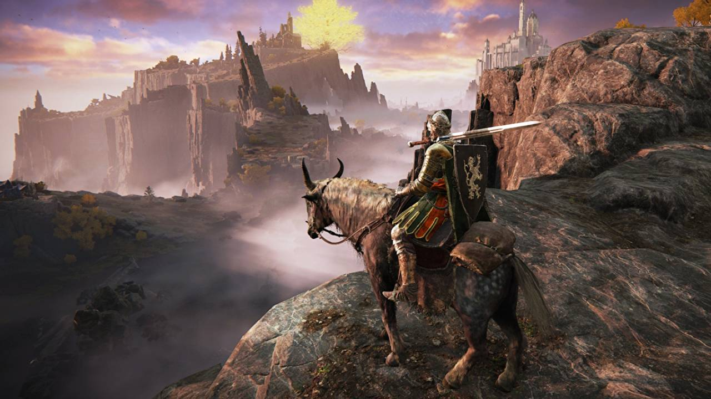
George R. R. Martin'in çalışmalarının büyük bir hayranı olan Hidetaka Miyazaki, Martin ile iletişime geçmiş ve oyunun dünyasını oluşturması için kendisine kreatif özgürlük tanımıştır. Miyazaki, IGN için verdiği bir röportajda, oyunun isminin anlamının sorulması üzerine "Yüzüklerin Efendisi en klasik fantezi romanı, bundan dolayı Elden Ring bu romandan belli bir miktarda esinlenilerek ama tamamen aynısı olmayacak şekilde yapıldı." dedi ve Elden Ring ismindeki "Ring" kelimesinin aslında parmağa takılan bir yüzük anlamına gelmediğini, "yuvarlak" anlamına geldiğini belirtti.
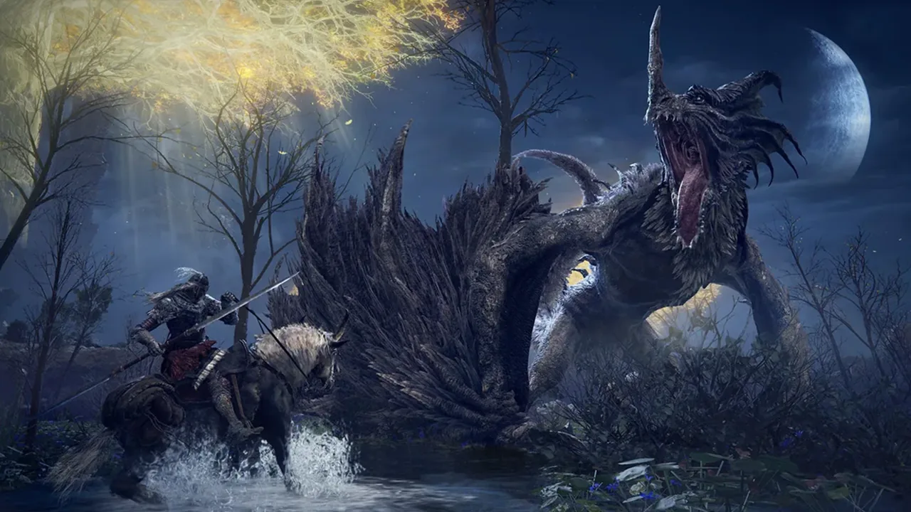
Elden Ring'in geliştirilmesine 2017'nin başlarında, Dark Souls III için geliştirilen The Ringed City indirilebilir içeriğinin yayımlanmasının hemen ardından başlandı. Diğer Souls oyunlarında olduğu gibi, Elden Ring sabit bir ana karakter ile oynamak yerine oyunculara kendi ana karakterlerini yaratabilme özelliğini tanıyacak. Oyun, her ne kadar ana mantığını Souls serisinden alacak olsa da, diğer Souls oyunlarının aksine, oyuncu olmayan karakterlerin (Npc) çok fazla bulunmadığı, zindan benzeri harabeler içeren daha büyük bir açık dünya, at sürme ve at üstünde savaş gibi yeni özelliklere sahip olacak.Miyazaki'ye hikâyenin kitaplaştırılma ihtimali sorulduğunda kendisi, oyuncuların oyunu oynayarak hikâyeyi öğrenmelerini ve deneyim etmelerini tercih ettiğini söylemiştir.[6] Oyunun müzikleri, daha önce de Miyazaki tarafından geliştirilen oyunların birçoğunda bestecilik yapan Yuka Kitamura tarafından bestelenmektedir.

 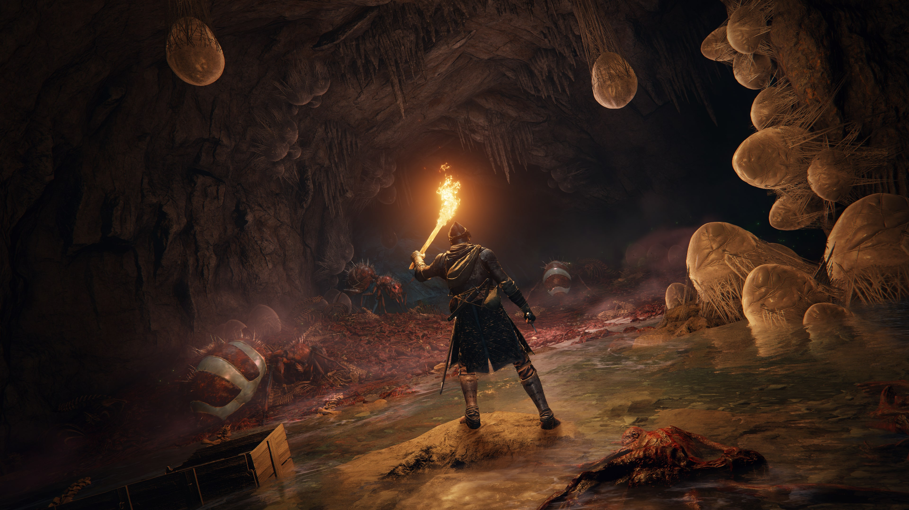
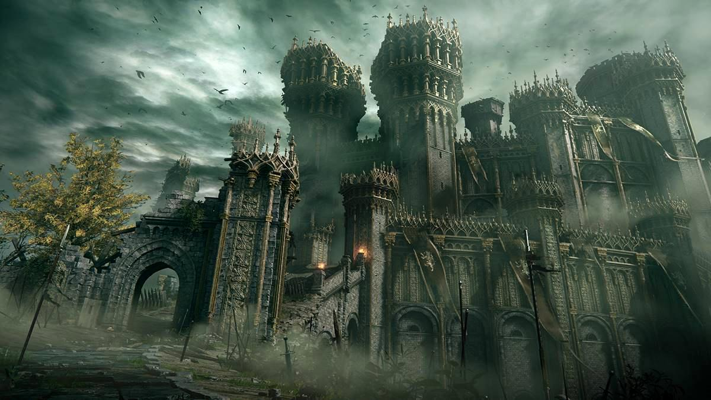
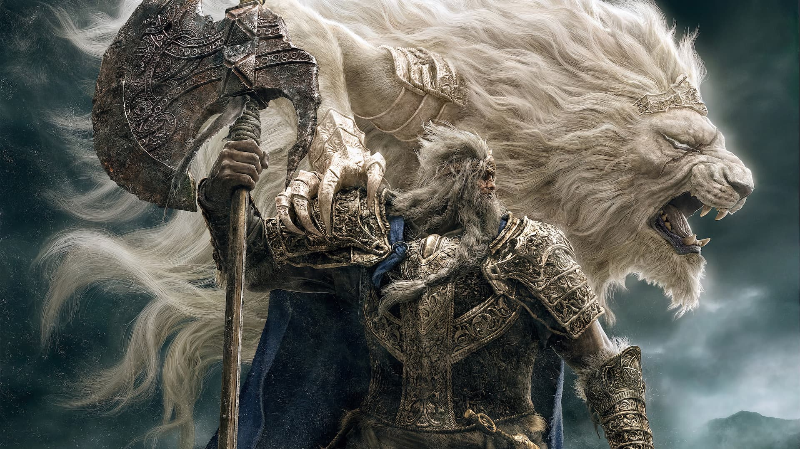
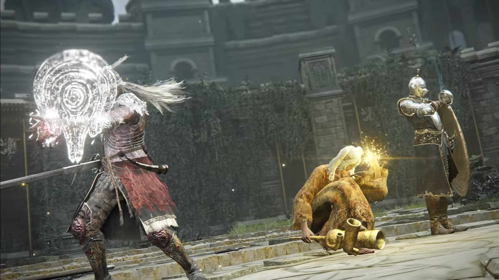
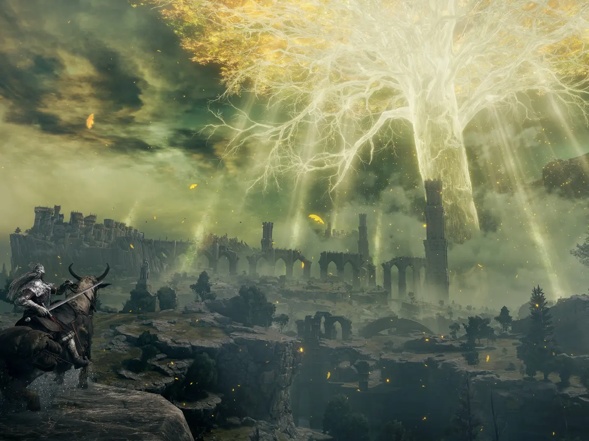
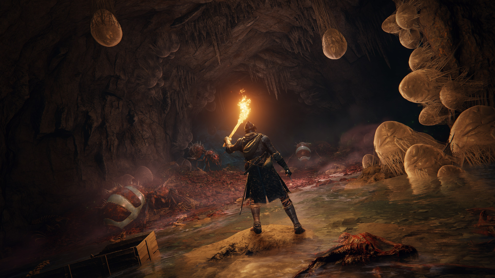
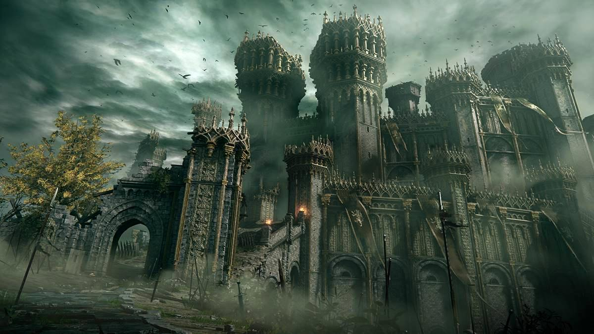
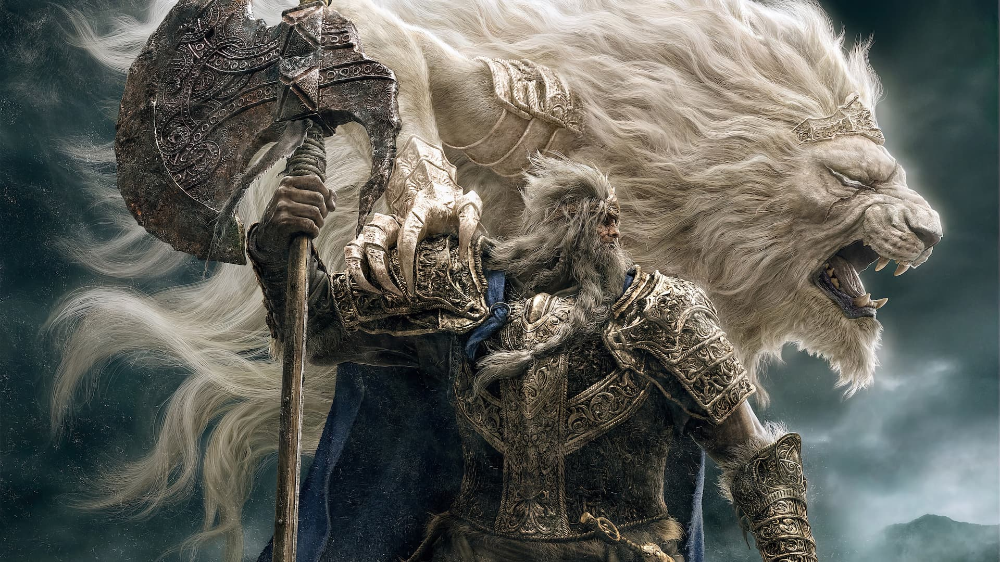
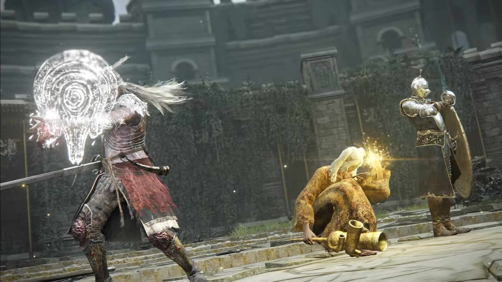
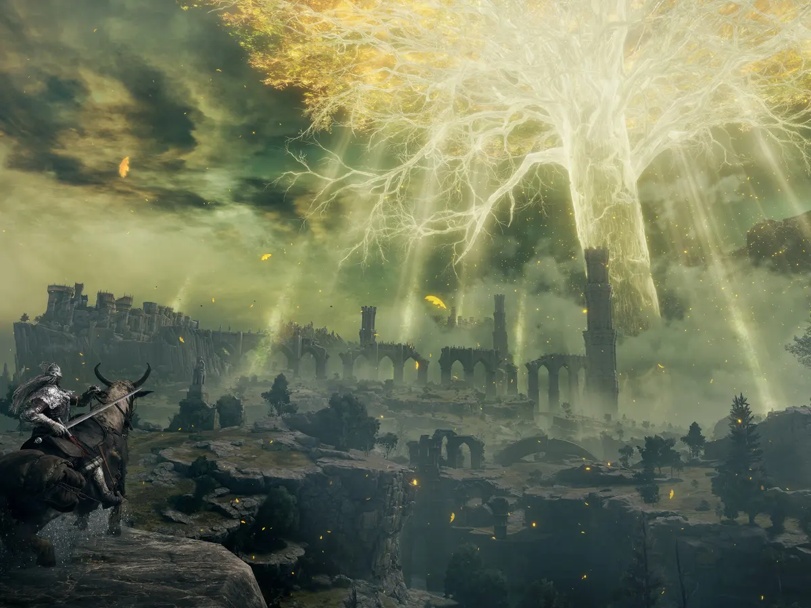